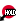
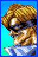
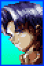

Lee Dao-Long

History
Lee Dao-Long is Sho's rival and senior. A young Korean who practices a Chinese martial art called the "Empty Fist." He likes to eat spicy food and enjoys a long ride in the desert on camel's back.
Gameplay
Dao-long stands out as a charge character with strong defense and mobility. His rapid charge input ensures smooth transitions between specials moves such as his fireball (Kouryuu Ga) and Flash Kick (Senkyuu Tai), known for their invincibility frames. He capitalizes on openings for high damage with light confirms and super juggles, excelling in space control and punishing adversaries.
| Commands | |
|---|---|
| Riyuu Seishou |
 + + |
| Senpuure Kyaku |
 + + |
| Shoutenchuu |
+ |
| Specials | |
| Kouryuu Ga |
 + + |
| Senkyuu Tai |
+
 |
| Supers | |
| Houshin Renpa |
 + + |
| Shin Kyoku Ranbu |
+ |
| Renkyuu Tai |

 +. +. |
Table of contents
Lights confirms
LP+HP (palm) : Reliable move to confirm most of your combos
ex: cr.LK > cr.LPx2 > LP+HP > super.
Anti-air
Flashkick LK
Quickly appears, excels at dealing with crossups. Super can be juggled if the opponent is hit at the highest point of his jump.
close st.HP
Special/Super cancelable
Can be juggled into Super
It can also be used as a throw OS
Break
Flashkick HK
Commonly used for invincible reversals and high-damage combos. it also serves as your go-to break move.
Offense
Dao-long's forward dash has a brief recovery. Use it to close the distance quickly and surprise your opponent. example: light pressure > forward dash > throw.
Dash > Super
Charge > dash (this will register 6 input) > then finish the super command.
ex: [1]66.46 K
Fuzzy / Instant overhead
j.HP > neutral j.LK
instant neutral j.LK overhead (does not work on all characters)
Throw Option select
Coupling Dash Guard with Back Throw (close back HP) makes for an aggressive throw/anti-air option select.
useful for dealing with opponents who are trying to escape your pressure by jumping
Table of contents
Meterless combos
- cr.LK > cr.LP x 2 > LP+HP > Fireball
- cr.LP x 3 > LP+HP > Flashkick HK
Metered combos
- cr.LK > cr.LP x 2 > LP+HP > Super
- cr.LP x 3 > LP+HP > Super
- cr.HK > Super
- HP+HK > st.LK > Super
Anti-air
- HP+HK > Super
- LK+HK > Super
- st.HP/LP > Super
- Flashkick LK > Super (when the opponent is hit at the highest point of their jump)
Air-to-air
- All jump normals into Super
 |
 |  |
 |
 |
 |
 |
 |  |
Saizo
Rasen Kyaku
Overhead, negative on hit and o, block with a long recovery.
Leaves ample time for punishment.
Saizo rarely resorts to this move unless finishing off his opponent
Ryuuei Kyaku
A slide requiring cancellation for safety.
In the corner, punish Saizo's slide > bomb with cr.LK.
Mid-screen, slide > bomb is punishable, though challenging.
If Saizo is close, punish with cr.LK > Super ([4]646K).
Yashagami
Yashagami HP knocks down opponents, while Yashagami LP serves as a reversal and anti-air.
This move must be canceled into a super due to its negative frames on hit and block.
Be cautious on block; Saizo still has a few frames to execute a super,
causing hesitation in your usual punishment.
In such instances, dao-long's Flashkick ensures a guaranteed punish.
st.HP
Close st.HP hits low, while the far version has significant recovery, making it punishable even on hit.
Hengetsuzan
punish wih Super ([4]646K).
Pielle
Saber Bash
Despite its animation, this move isn't an overhead.
Punish with [2]8K
Flying Peach Bomber
This one is an overhead, but if done close to you, it will whiff, and he'll pass behind you.
When used in a blockstring, there's always a gap, no matter which normal move it was canceled from.
Punish on whiff with [2]8LK
Bonjour Shot
A projectile with a very slow recovery.
At close range, punish on block or hit with cr.LK or Super ([4]646K)
Robin Liner
An anti-air special with slow recovery and no reversal properties...
On hit, LP version keeps you standing for a punish, while HP version knocks you down.
Monsieur Crash
A three-hit move, easily punishable. However, Pielle can delay each hit to counter your punish attempt.
Merci Un Deux Trois
An aerial dive that can deceive your anti-air or jump.
When you block all 3 hits, Pielle passes behind you. Punish with cr.LK
Super Rose
A super that crosses the entire screen with a wide hitbox, useful for countering jump attempts.
Whiff punish at super flash with [2]8LK
Thunder Croiser
On block, punish with Super ([4]646K)
Rila
Dynamite Kick
Killer Snake
Killer snake isn't an overhead, so block low.
The HK version passes through projectiles and sets up her super.
It's negative on block, but she still has frames to input her invulnerable startup Super.
On block, always react with cr.LP, it will punish if she does nothing.
In case she use Shine Beast Super, just block. if it's Bloody Fang, [2]8LK will hit her startup frames.
Spinning Claw
hard to punish due to pushback. It remains active for a while and has priority over normals
and some supers
Quick Scratch LP
Very fast, can catch you off guard at mid and close range. You can punish it on whiff with any normal
Quick Scratch HP
Same as LP version unless it is minus on block, punish with cr.HP.
Wild Saver
Her reversal and break special. Punish LK ver. with st.HP. HK ver. has more recovery,
if you're close enough, you'll have time to punish her with a neutral jump
Shine Beast
On block, she ends up on the other side (at mid and close range).
With practice, you can time your jump correctly to punish her
Bloody Fang
This super is not overhead despite the jump animation. punish with Super ([4]646K)
cr.HP
Dao-long
Kouryuu Ga
dao-long's fireball, punsish at point blank with cr.LK.
use your super ([4]646P) to pass through his fireball.
Senkyuu Tai
his invul. reversal anti-air, punish on block with st.HP
Riyuu Seishou
A combo ender and pressing tool that he usually follow with Super or projectile,
the move allows him to chip and build meter in a safest way.
Senpuure Kyaku
slow anti-air command. If you're close enough, you can punish him on block with crouching Light Kick.
Shoutenchuu
Safe short jump Overhead, whiff punish with [2]8K
Houshin Renpa
Fireball super, can be used at mid range to punish your own projectiles
Shin Kyoku Ranbu
not overhead despide to jump animation. punish on block with Super ([4]646K)
Condor
Tomahawk Jack
Tomahawk is used as an anti-air or to defend against projectiles and build meter.
This move is easily punishable on block: up close, use LP+HP and
from any range, punish with super ([4]646K), which also punishes on whiff.
Gran Buffalo Horn
Passes through projectiles and helps close the distance against grounded opponents.
Punishable on hit and whiff with cr.HK
Sky Bridge
Punish with cr.LK at close range.
Atlas Rock Buster
Has invul. startup, useful for reversals, anti-airs, or ending combos.
Can be tricky to punish on block if not close enough due to pushback and quick recovery.
The key is to react after the first blocked hit; you can throw.
cr.HK
punish with cr.LK
cr.HP
Sho
Onigawara
An overhead, safe on block, and cancelable from all of his close normals, making it a strong move.
However, it's punishable during its startup frames. It's also breakable when canceled into 236HK.
Tobihizageri
A pressing tool, safe on block, but depending on the range,
Sho might end up within your throw range or leave an opening in the knee animation where you can react with
[2]8K.
Sashikomi Kick
This divekick is challenging to handle because it can be executed from any jump height.
Additionally, it is super-cancelable on hit, block, or whiff.
At high height and when Sho has no meter, you can reliably counter it with your anti-air (st.LP or [2]8K).
It is also breakable with [2]8K or throw (though throw can be countered by sho's 214HK)
Rekkou Ha
A basic fireball that can be punished when blocked at point-blank range.
Ranki Ryuu Geri
Ranki Ryuu Geri is tricky as it can be followed by air super (Geki Rekkou Ha).
However, it's still minus on block. at Super flash, you can react with [2]8LK
Geki Rekkou Ha
Break with a backdash if used at a high height. For example: divekick x super or fuzzy j.HK x super.
cr.HK
Punish on block with super ([4]646K)
Maherl
Abdomen Step
This short step is punishable with cr.LK if he is very close to you.
It's safe if it was canceled by st.LK (st.LK creates a slight pushback).
However, you can always break or whiff punish with [2]8K
Slash Sword
This attack can reach you from very far away.
Safe at maximum range. At mid and close range, punish with st.HP.
Punish Sword
Travels a shorter distance than Slash Words. It is also Safe at maximum range.
At close range, punish with st.HP.
Fire Breath
Punish LP version on block with j.HK and on whiff with super (236236P).
For HP version, you can interrupt with any normals immediately after blocking the first or second hit.
Balloon Bomb
Overhead, whiff punish with st.HP/cr.HP or [2]8K. on block, punish with run > st.HP
Cadabra Bomber
A Super that can go through projectiles up close. Punish with any Super or run > st.HP
Shiva Dance
A Super with invincible startup that is safe on block. Punishable up close with a backdash after blocking first hit.
Tia
Normals
All her normals, even cr.HK, are safe on block, boosting her offense.
Tia pressures Sho well with her dash attack, especially dash > st.HK,
doubling as a powerful anti-air and setup for a super juggle.
To stop her dash attacks, Sho needs to quickly and preemptively input multiple cr.LK.
Soul Spike
Ground Soul Spike LK/HK are not overhead, block low.
Soul Spike LK has pushback and minimal recovery.
Dao=long can only perform a light punish with cr.LK on midscreen, or attempt cr.LK > LP+HP when he's in the
corner. Soul Spike HK has no pushback, making it easier to punish. Punish with st.HP or a Throw.
On hit, you can break both versions with a throw, backdash, or Super.
Before attempting a block punish, check her super meter first.
Tia can counter with Burning Revolver. A throw is a guaranteed punish if she uses Soul Spike HK.
Mirage Spear Kick
Rising upper
Rising Upper LP is an anti-air reversal with quick recovery, making it difficult to punish on whiff.
It's invulnerability on startup allows her to pass through projectiles.
When blocked at close range, punish with st.HP.
Rapid Gale
Her Fireball isn't ideal for zoning and has a slightly slow recovery. She mostly uses it for okizeme or
pressure.
at mid range, while dashing, you can react and jump to punish her.
Heel Break
After the first hit of the 2-hit sequence,
punish or break with a throw, [2]8K, or super, especially since the last hit is an overhead.
Rapid Charge
Her strong super punishes projectiles.
When she switches sides mid-air on block, quickly turn your character to punish.
Burning Revolver
dash > st.HP to punish.
Cutlass Flasher
Overhead super, switches sides on block.
Alsion III
Horus Shade
An overhead that is safe but has a slow startup, making it easily reactable.
Punish on whiff with [2]8K or cr.HP
Death Shred
This one is also an overhead with a slow startup but has a larger pushback.
It's a two-hitter when the opponent is standing.
Second hit is overhead.
If crouched, whiff punish with cr.LK; standing, interrupt before 2nd hit with cr.LK.
Poison Fog
Close-range projectile for chip damage or pressure on your wakeup.
Deadly Claw
A teleport ending with an aerial strike, usable on the ground and in the air to counter your anti-air attempts.
When executed close to you, the LK version lands in the same spot, while the HK version lands behind you.
Punish at close range with Super (236236P) and on whiff with [2]8K.
Dash Knee
A special dash attack that must be executed at the right spacing to be safe.
Punish on block or hit with cr.LK
Anubis Hug
Super projectile with invul. startup. Punish at close range with cr.LK
Pharaoh Dance
Super projectile with invul. startup. If you block it, he retreats very far.
Punish with Super ([4]646P)